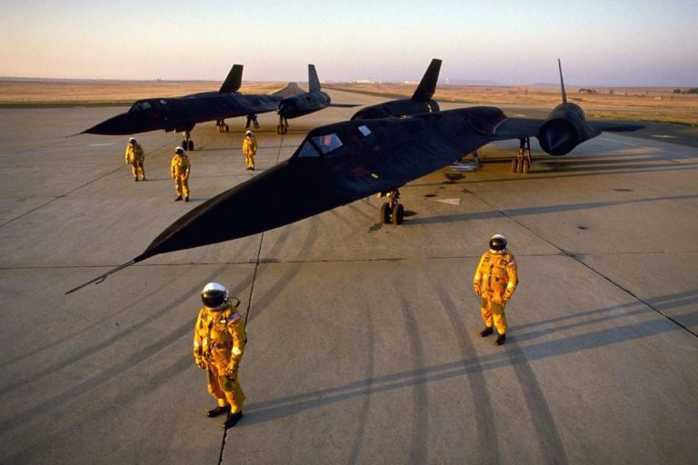

Lockheed SR-71 Blackbird — уникальный разведчик из 60-х
Во времена холодной войны разведка имела одно из самых важных направлений в авиации. Именно для этих целей нужны были самые передовые и дорогие технологии тех времен. Одним из таких чудес инженерной мысли стал Lockheed SR-71 BlackBird.

До создания этой машины самым подходящим для разведки в ВВС США был самолет U-2, но со временем его характеристик было уже недостаточно. Он мог забираться на высоту 21 км, и долгое время был недосягаем для советских ПВО. Но 1 мая 1960 года ПВО СССР всё же удалось сбить такой самолет над Уралом, и с тех пор полеты американских разведчиков над территорией СССР прекратились.
На тот момент компания Lockheed уже занималась разработкой нового уникального самолета, который мог бы стать достойной заменой U-2. Новый самолет носил имя SR-71 Blackbird, и какая-либо информация о нем еще долгое время держалась в строжайшем секрете. Изначально компания Lockheed разрабатывала самолет A-12, предназначавшийся прежде всего для ударных целей, но приоритеты менялись, и в итоге он стал прототипом для SR-71. Экипаж теперь состоял из 2-х человек, ведь оборудование было достаточно сложным. Фюзеляж стал длиннее для размещения дополнительных топливных баков и разведывательного оборудования. Машины делились на 2 вида: SR-71A и SR-71B, где версия А была предназначена для выполнения заданий, а версия B – для обучения и тренировки экипажей.
Lockheed SR-71 Blackbird — Оснащенность и Технические характеристики
| Экипаж | 2 |
| Длина | 32.74 м |
| Размах крыла | 16.94 м |
| Высота | 5.64 м |
| Площадь крыла | 141.1 м2 |
| Масса пустого самолета | 27215 кг |
| Максимальная взлетная масса | 77100 кг |
| Масса оборудования | 1600 кг |
| Масса топлива | 46180 кг |
| Тип двигателя | Турбопрямоточный |
| Модель двигателя | Pratt & Whitney J58-P4 |
| Максимальная тяга | 2 х 10630 кгс |
| Тяга на форсаже | 2 х 14460 кгс |
| Масса двигателя | 3200 кг |
| Максимальная скорость | 3500 км/ч |
| Крейсерская скорость | 3300 км/ч |
| Дальность полета | 5230 км |
| Радиус действия | 2000 км |
| Продолжительность полета | 1.5 часа |
| Практический потолок | 25910 м |
| Скороподъемность | 60 м/с |
| Длина разбега | 1830 м |
| Тяговооруженность | 0.36 |
| Максимальная высота полета | 29 000 м |